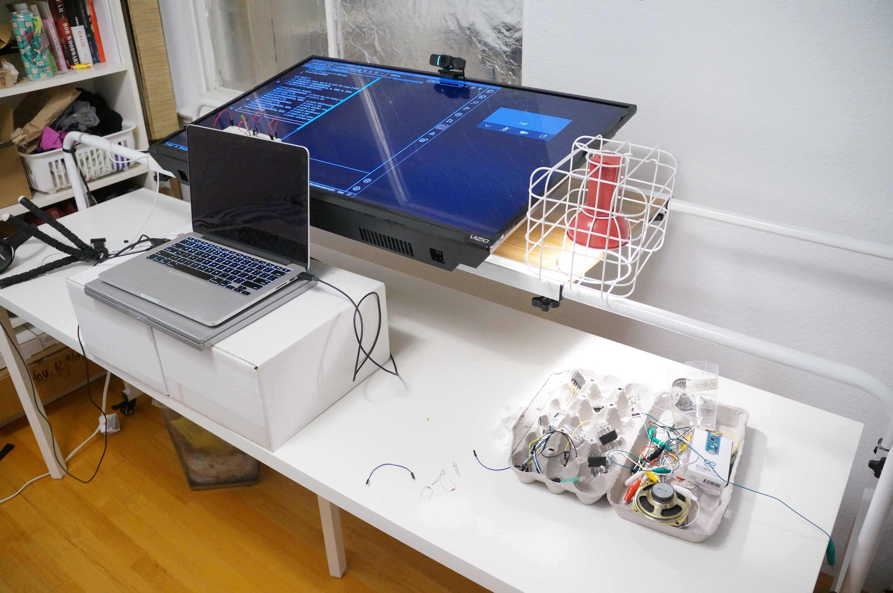

Adjusting my setup is honestly my favorite part of each lab.
Classes are remote, and I got tired of sitting almost the entire day every
day! This week, I adjusted my setup to make it just as comfortable to sit
or stand.

I also found some new tricks that allowed me to have a better
documentation setup:
For documentation labs for this class, I typically need to record both the
screen and the physical world simultaneously. I previously accomplished
this by taking camera pictures of the circuit juxtaposed with a screen.
The fidelity on these "screenshots" just isn't super great.
This week, I going to take screen recordings instead. I am now able to
bring the real world into the screen using these two tricks:
- When I was reading the help manual for QuickTime Player (reading
documentation is, for some reason, something I do for fun), I found this
cool feature:
 - I searched around for an iPhone app that displays just the camera, with
no decorations around the image. I finally found one called [Full Screen
Camera](https://apps.apple.com/us/app/full-screen-camera/id1504011874) --
it looks like the developer created it specifically for this purpose.
Putting all of this together, I could now capture both worlds in a single
screen recording. Here's what the setup looks like:
- I searched around for an iPhone app that displays just the camera, with
no decorations around the image. I finally found one called [Full Screen
Camera](https://apps.apple.com/us/app/full-screen-camera/id1504011874) --
it looks like the developer created it specifically for this purpose.
Putting all of this together, I could now capture both worlds in a single
screen recording. Here's what the setup looks like:
 There is a slight lag with the phone screen mirroring, but I hope it's not
too noticeable.
[](https://itp.nyu.edu/physcomp/lab-intro-to-serial-communications/)
Using `cat $PORT` as a serial monitor. `cat` is very robust and way less
finicky than Arduino IDE serial monitor.
Unlike the previous program, this one prints out values only when a key
is pressed.
💡 This took me way longer than expected to build. I managed to wire
many wires incorrectly, including having an off-by-one error with the
Arduino pinout, and forgetting to connect a wire for ground. It was not
a fun process. :(
[](https://itp.nyu.edu/physcomp/labs/labs-serial-communication/lab-serial-output-from-p5-js/)
Having lived and learned through quite a few common mistakes earlier, I
found this lab fairly straightforward. Here are the results.
There is a slight lag with the phone screen mirroring, but I hope it's not
too noticeable.
[](https://itp.nyu.edu/physcomp/lab-intro-to-serial-communications/)
Using `cat $PORT` as a serial monitor. `cat` is very robust and way less
finicky than Arduino IDE serial monitor.
Unlike the previous program, this one prints out values only when a key
is pressed.
💡 This took me way longer than expected to build. I managed to wire
many wires incorrectly, including having an off-by-one error with the
Arduino pinout, and forgetting to connect a wire for ground. It was not
a fun process. :(
[](https://itp.nyu.edu/physcomp/labs/labs-serial-communication/lab-serial-output-from-p5-js/)
Having lived and learned through quite a few common mistakes earlier, I
found this lab fairly straightforward. Here are the results.